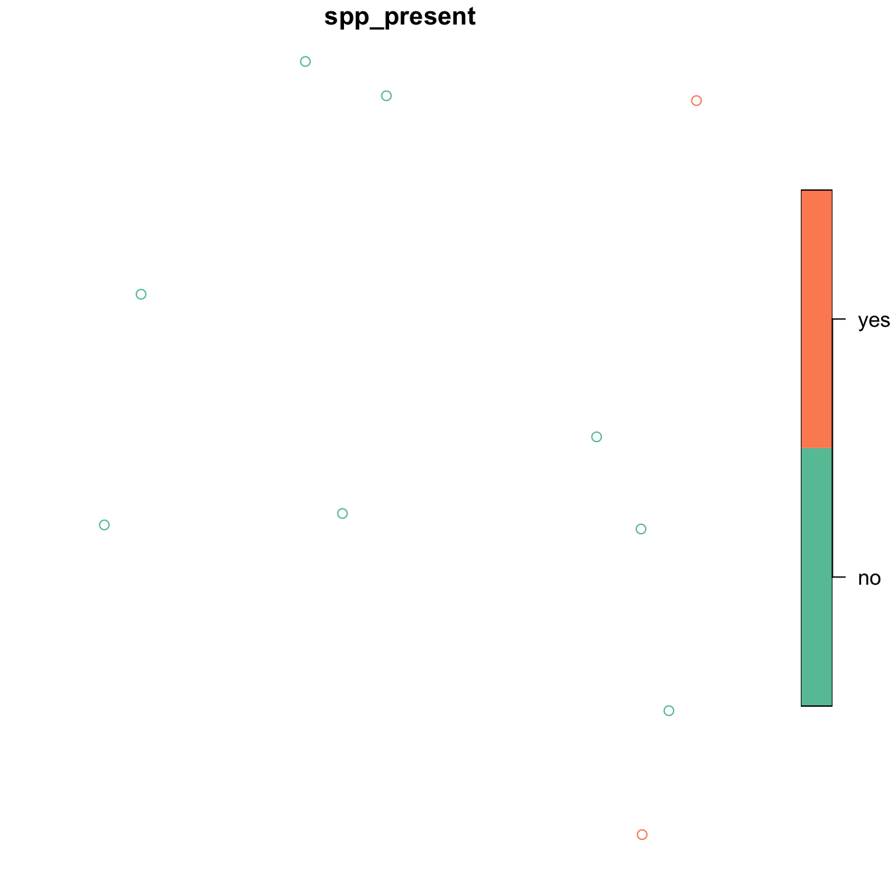
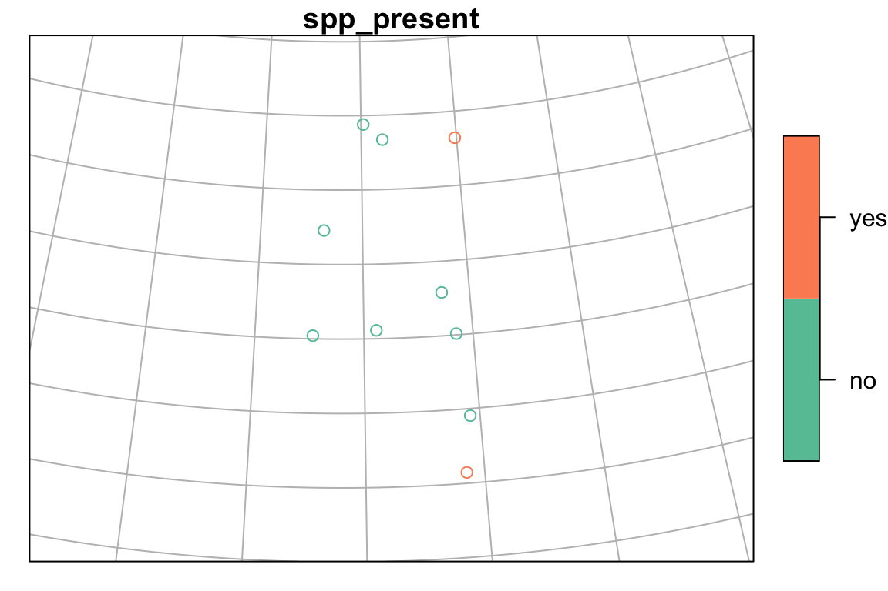

vignettes/add_points.Rmd
add_points.RmdWe often want to be able to add point data to a map. This vignette will run through a simple example of converting a data.frame of latitude/longitutes into a SpatialPointsDataFrame, and reprojecting it so that the points can be overlaid on a layer from the bcmaps package.
For this example, say we have done surveys for a species across B.C., and we want to be able to add the presences and absences on to a map of British Columbia.
First, load the packages we will need:
sf for working with spatial layers in the simple features formatbcmaps for accessing spatial files of B.C.ggplot2 for plottingWe will create a mock dataframe of locations of species presence/absences (in real life these would probably be in a csv or Excel file that we would import):
set.seed(42)
spp <- data.frame(site_num = LETTERS[1:10], spp_present = sample(c("yes", "no"), 10, replace = TRUE),
lat = runif(10, 49, 60), long = runif(10, -128, -120),
stringsAsFactors = FALSE)
head(spp)## site_num spp_present lat long
## 1 A no 54.03516 -120.7677
## 2 B no 56.91023 -126.8903
## 3 C yes 59.28139 -120.0889
## 4 D no 51.80972 -120.4267
## 5 E no 54.08522 -127.3405
## 6 F no 59.34016 -123.8863Next we convert this to a SpatialPointsDataFrame using the sp package. The syntax for doing this is a little obscure - you specify the columns that hold the x and y data in a character vector on the right hand side of the <-:
## site_num spp_present geometry
## Length:10 Length:10 POINT :10
## Class :character Class :character epsg:NA: 0
## Mode :character Mode :character
In order to overlay these points on other spatial layers, they need to use the same Coordinate Reference System (CRS). Coordinate systems and projections in R can be confusing. There is a great reference on using them here: https://www.nceas.ucsb.edu/~frazier/RSpatialGuides/OverviewCoordinateReferenceSystems.pdf.
We know that our occurrence data are in decimal degrees in NAD83, so we will assign the corresponding proj4string. You can specify the projection using a full proj4 string ("+proj=longlat +ellps=GRS80 +towgs84=0,0,0,0,0,0,0 +no_defs") or the EPSG code (4269). We will use the EPSG code because it’s shorter and less likely to make a typo with.
All of the maps in the bcmaps package are in BC Albers projection (EPSG:3005), which is the B.C. government standard. It is an ‘equal area’ projection, meaning that the size of areas is not distorted, and thus is suitable for analyses on large areas.
If we look at the proj4string for bc_bound and our spp_df, we see that they are different:
bc_bound <- get_layer("bc_bound")
st_crs(bc_bound)
## Coordinate Reference System:
## EPSG: 3005
## proj4string: "+proj=aea +lat_1=50 +lat_2=58.5 +lat_0=45 +lon_0=-126 +x_0=1000000 +y_0=0 +ellps=GRS80 +towgs84=0,0,0,0,0,0,0 +units=m +no_defs"
st_crs(spp)
## Coordinate Reference System:
## EPSG: 4326
## proj4string: "+proj=longlat +datum=WGS84 +no_defs"So let’s transform the dataframe of species presence/absences into the same CRS as bc_bound:
Now we can overlay the points on the provincial boundary dataset:
plot(spp["spp_present"], expandBB = rep(0.2, 4), graticule = TRUE)
plot(st_geometry(bc_bound), add = TRUE)
Now we want to know what ecoregeion of the province each of these observations was in. We can use the ecoregions data from bcmaps, and the st_join function from the sf package to extract ecoregions from the point data and add that information:
## Simple feature collection with 10 features and 3 fields
## geometry type: POINT
## dimension: XY
## bbox: xmin: 912519.3 ymin: 600149.1 xmax: 1383324 ymax: 1642418
## epsg (SRID): 3005
## proj4string: +proj=aea +lat_1=50 +lat_2=58.5 +lat_0=45 +lon_0=-126 +x_0=1000000 +y_0=0 +ellps=GRS80 +towgs84=0,0,0,0,0,0,0 +units=m +no_defs
## site_num spp_present ECOREGION_NAME
## 1 A no CENTRAL CANADIAN ROCKY MOUNTAINS
## 2 B no BOREAL MOUNTAINS AND PLATEAUS
## 3 C yes HAY-SLAVE LOWLAND
## 4 D no COLUMBIA HIGHLANDS
## 5 E no EASTERN HAZELTON MOUNTAINS
## 6 F no MUSKWA PLATEAU
## 7 G no MUSKWA PLATEAU
## 8 H yes THOMPSON-OKANAGAN PLATEAU
## 9 I no FRASER BASIN
## 10 J no CENTRAL CANADIAN ROCKY MOUNTAINS
## geometry
## 1 POINT (1341578 1016164)
## 2 POINT (945861.3 1324757)
## 3 POINT (1337001 1602713)
## 4 POINT (1383324 770393.7)
## 5 POINT (912519.3 1009950)
## 6 POINT (1120431 1596971)
## 7 POINT (1063173 1642418)
## 8 POINT (1373357 600149.1)
## 9 POINT (1102484 1025860)
## 10 POINT (1297769 1139361)